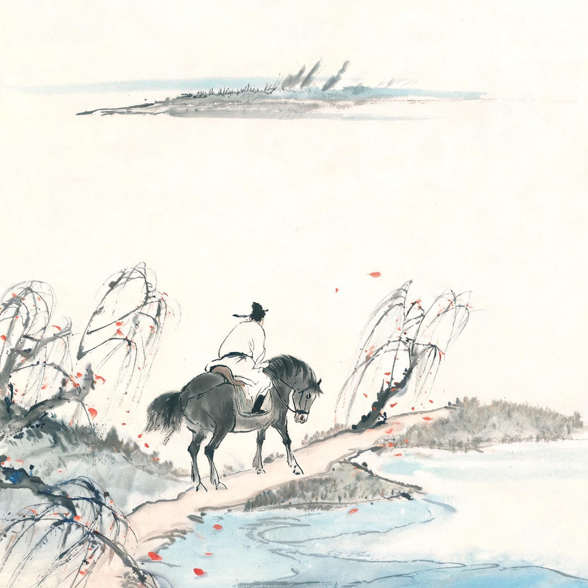
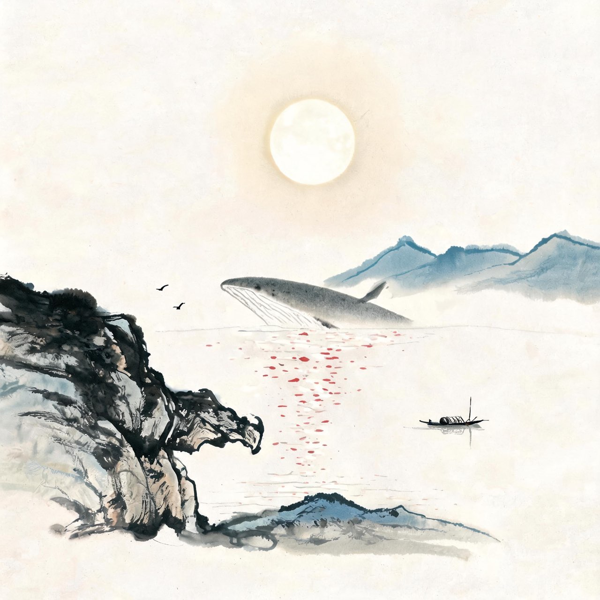

李白 · 761-762
当涂
大鹏中摧
上元二年秋，宣城往北，五松山下。你穷途落魄，投宿在一户姓荀的农家。白发的女主人跪着端来一碗菰米饭，月光照在素盘上。你这一生受过的宴请无数，这一碗最重——
宿五松山下荀媪家
我宿五松下，寂寥无所欢。
田家秋作苦，邻女夜舂寒。
跪进雕胡饭，月光明素盘。
令人惭漂母，三谢不能餐。
注
- 五松山：在今安徽铜陵，李白《与南陵常赞府游五松山》诗中自名此山
- 雕胡饭：菰米饭，即菰的籽实（菰米）所炊；漂母：汉韩信微时受漂母一饭，后以千金报——李白自比韩信之穷，言受此一饭而无以为报
- 系年取上元二年（761）说，另有750前后、宝应初诸说

请缨
上元二年，李光弼率大军东征，进讨史朝义。
消息传来，六十一岁的你在金陵坐不住了。你还记得年轻时的抱负——谈笑静胡沙。安史之乱烧了近七年，史贼未灭，山河未复，而你李太白还没为国家打过一仗。
你决定投军。半路上，病倒了。
只好折回金陵。病历上写着你的年纪和一身旧疾，没人再敢用你。你这一生两次请缨——一次给了永王，换来流放；一次给了李光弼，走到半路走不动了。
命运没有给你战场，只给了你诗。你大约还不知道，这已经够了。
穷病交加的你在金陵撑了一年，终于投奔当涂——那里有你的族叔，县令李阳冰。
注
- 请缨从军事：诗题自述'请缨''半道病还'；乱起755冬至761秋，历年约近七年
- 李阳冰：当涂县令，李白族叔，著名书法家；李白临终把手稿托付于他，即《草堂集》
宝应元年十一月，当涂。你病得很重了。把手稿交给李阳冰之后，你写下此生最后一首诗。歌里又是那只大鹏——六十多年前，江陵的道人一眼看出你是大鹏；如今大鹏飞到中天，力尽了——
临路歌
大鹏飞兮振八裔，中天摧兮力不济。
馀风激兮万世，游扶桑兮挂石袂。
后人得之传此，仲尼亡兮谁为出涕。
注
- 《临路歌》一题《临终歌》，题名版本有异，'临路'或为'临终'之讹
- '馀风'一作'余风'；'石袂'一作'左袂'，版本有异文
- 仲尼亡兮：孔子曾见获麟而泣，叹'吾道穷矣'——李白以获麟自比，叹世无孔子，无人为他一哭
- 卒年宝应元年（762）十一月，享年六十二（虚岁）

捉月
你死后，人们不肯让你就这样病死于床榻。
人们传说：那晚你在采石矶上饮酒，见水中月色皎洁，俯身去捉，落入大江，乘鲸背上升天而去。
传说没有道理，传说也自有道理。你五岁随父翻山入蜀，一生走遍大半个天下；你写月亮的句子比任何诗人都多——小时不识月，呼作白玉盘；举头望山月；峨眉山月半轮秋；欲上青天揽明月。
一个写了一辈子月亮的人，人们怎么舍得让他死于一场寻常的病。
于是让月亮来接他回去。
一千二百多年过去了。孩子们学会的第一首诗是你的，酒桌上的豪言是你的，失意时的长歌也是你的。谪仙人下凡一趟，把天才、傲骨和全部的月光留给了人间。
你这一生，求仕不得，求仙不得，求用世而见弃，求归隐而不甘——唯独写诗，写成了诗仙。
欢迎回到人间。
注
- 捉月骑鲸：传说定型于五代宋初笔记（《唐摭言》'李白著宫锦袍，游采石江中，傲然自得，旁若无人，因醉入水中捉月而死'），正史异说并存——《旧唐书》本传记'以饮酒过度，醉死于宣城'，今从病卒当涂说（李阳冰《草堂集序》序于宝应末）；捉月之说作为传说流传，与史传病卒并存
- '小时不识月'出《古朗月行》，'欲上青天揽明月'出《宣州谢朓楼饯别校书叔云》——均为李白咏月名句